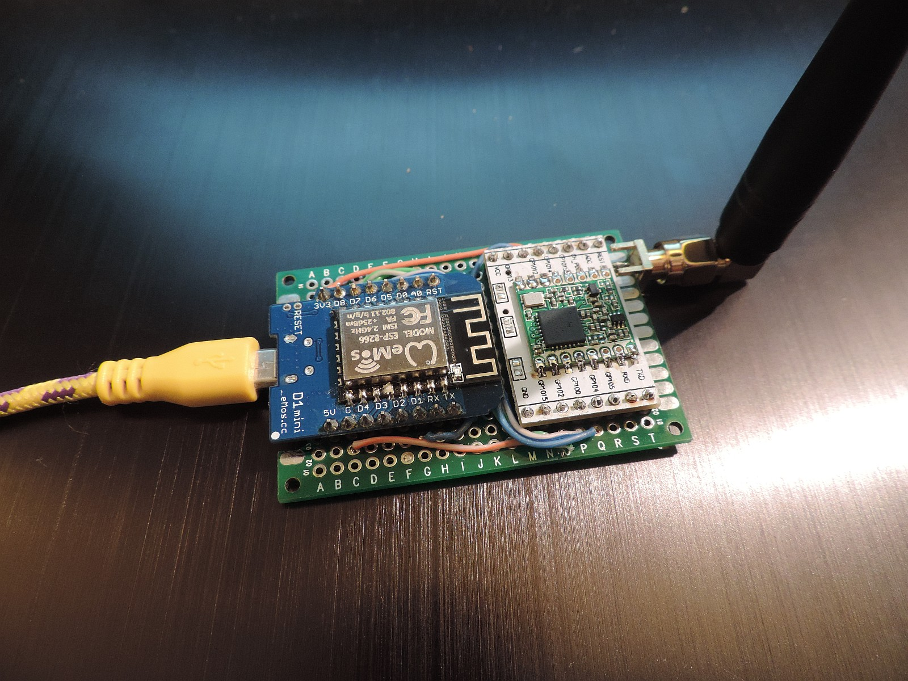
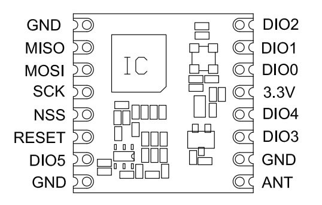
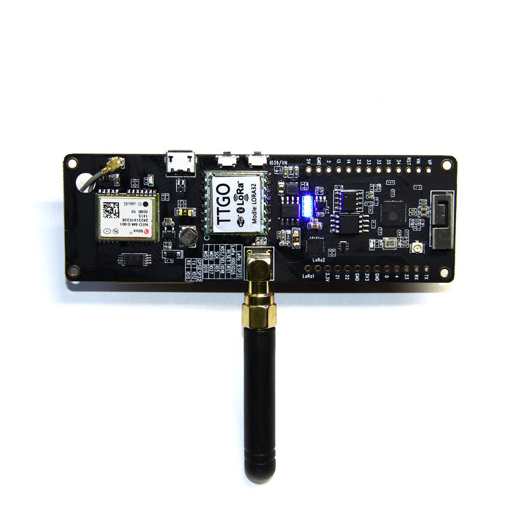

This document describes how to install the hard- and software of the single channel gateway.
(c) Maarten Westenberg (mw12554@hotmail.com)
|
Single Channel Gateway based on traditional PCB |
This document descibes version 5.0 (and newer) of the ESP8266 LoRa Gateway. The LoRa gateway based on the ESP8266 mcu has evolved a lot over the last year. Although all versions that I built are/were built using the Wemos D1-mini board that can be bought on Aliexpress amongst others, the system has changed. For the latest version of the gateway I make use of the PCB that has been designed and built by Charles Hallard (and can be bought from pcbs.io). If you use the Hallard PCB, you have to remember though that DIO0, DIO1 and DIO2 pins are multiplexed on the board using (very!) small diodes to GPIO pin 15 (D8).
Other PCB's work as well, but if you like to build a small gateway and keep as many GPIO pins available as well, the Hallard board is unbeatable. An alternative solution is the board made by Comresult. This PCB is larger than that of Hallard but can be put inside a standard IP56 box. Should you work with a more traditional PCB, make sure that at least DIO0 and DIO1 are connected to a pin on the Wemos. Such a board is shown above.
Note: RX and TX pins are used for the Serial (USB) communication. They can be used as data pins as well, but only is Serial communication is not used.
Pins used MUST(!) be correctly configured as described in the ESP-sc-gway.h file for the gateway to work.
The project source code is found on the Things4U github page.
In order to build a working gateway, several steps need to be taken:
There are two families of gateway hardware supported:
This document describes how to get these two solutions working. It does however not say that other ESP826 or ESP32 based boards (or even completely different boards) to not work with this software. However, if you do so you are on your own and you will have to make the necessary connections, configuration changes etc. to get the software to work with that hardware.
First of all, if you want to do it all yourself, it is always possible to build your own gateway using a wemos D1 mini, a piece of board and a RFM95 chip with adapter board.

As you can see on the picture above, the whole gateway fits on a very small board. And as there are even less connections necessary as for the loRa node, this DIY project could be ready in a matter of hours. These are the steps:
I did not yet find a nice box to put the gateway in, but that will probably not last very long.
The pin out of the two devices on the gateway board are as follows:

The pin-out of the ESP8266 is as follows (note: There are differences in pin-out between the various ESP8266 devices)

The ComResult PCB is a next version of the Bare Board solution and uses the same pin definitions. Please make sure that you connect dio1 to D2 on the board with a wire (and connect dio2 to D3/GPIO0 in order to use the gateway as a node later).

You see a picture above of one of the latest versions of the ComResult board. Please not the 2 wires that connect the D2 pin of the ESP8266 with the dio1 pin of the RFM95 and optionally the D3 pint with the dio2 pin.
For the bare board solutions the connections that need to be made are as follows:
| RFM95 pin | Wemos D1 mini pin | |
|---|---|---|
| 3.3V | VCC | 3.3V |
| GND | GND | |
| MISO | D6 GPIO12/MISO | |
| MOSI | D7 GPIO13/MOSI | |
| SCK | D5 GPIO14/CLK (*) | |
| NSS | D8 GPIO15/CS | |
| RESET | *nc | |
| DIO0 | D1, GPIO5 | |
| DIO1 | D2, GPIO4 | |
| DIO2 | D3, GPIO0 (**) |
* The reset pin does not have to be connected so it seems. It is only used at setup to read the chip identification
** This connection is not necessary for the current version of the gateway, but is more versatile for next versions or other use
As you can see, both reset of RFM95 and D3/GPIO0 of the ESP8266 are not used. Not connecting the last one makes the ESP8266 gateway more stable and the behavior between flash and normal mode is the same.
In summary: there are limited amount of extra pins available. D3/GPIO0 is available when carefully used, as well as D0/GPIO16 and D4/GPIO2.
Optionally when using OLED, we use both D3 and D4 and therefore no other pin's are available.
| OLED pin | Wemos D1 pin | |
| VCC | 3.3V | |
GND |
GND | |
| SCL | D3, GPIO0 | |
| SDA | D4, GPIO2 |
Charles Hallard has designed a very small board that can be used to build your own gateway. The boards are available from pcbs.io abs will be shipped for free anywhere in the world in quantities of 5 pieces.

On the top left you can see the place where to solder the 3 diodes which connect dio0, dio1 and dio2 to GPIO15.
The Hallard board is slightly different from the bare-board or ComResult pcb as it will share dio0, dio1 and dio2 with the same GPIO pin over 3 diodes. This requires small adaptations of the LMIC software should you want to use thisPCB to build a node, and it does require some additional work at the gateway if you like to work with the latest version of the gateway.

For the bare board solutions the connections that need to be made are as follows:
| RFM95 pin | ESP8266 pin | |
|---|---|---|
| 3.3V | VCC | 3.3V |
| GND | GND | |
| MISO | D6 GPIO12/MISO | |
| MOSI | D7 GPIO13/MOSI | |
| SCK | D5 GPIO14/CLK (*) | |
| NSS | D0 GPIO16/CS | |
| RESET | *nc | |
| DIO0 | D8, GPIO15 (**) | |
| DIO1 | D8, GPIO15 (**) | |
| DIO2 | D8, GPIO15 (**) |
* The reset pin does not have to be connected so it seems. It is only used at setup to read the chip identification
** Soldering small diodes at the position shown above is quite difficult! And moreover, once you have soldered the ESP8266 to this board you cannot reach the diode position ever again. So (!) make sure you solder all 3 diodes (but at least 2) before continuing with this board.
As you can see, both reset and GPIO0 of the ESP8266 are not used. Not connecting the last one makes the ESP8266 gateway more stable and the behavior between flash and normal mode is the same.

The antenna can be a piece of 8CM wire which works OK out of the box. However, spring antenna's which cost less than a EURO work better and are preferred for use with the ESP8266 based machines. Of course TTGO has an even better antenna option.
The TTGO board is a complete gateway board as you buy it. As it is based on the more powerful ESP32 chip it is a little bit more expensive than the ESP8266 based boards, but it does include the SX1272 LoRa chip and other goodies and it has two cores (which will prevent lock-ups and other nasty watchdog resets). The TTGO board often comes with its own OLED display as well.
There are a number of different versions of the TTGO board, fortunately most are almost equal in pin-out:
The Heltec bvoards (white) are more or less the same. When programming the TTGO boards, use the Heltec

However, as this board is relatively new to the family not all libraries that are available for the ESP8266 are also available for the ESP32. Sometimes they work, but sometimes one must install alternate libraries and even call different functions to get the gateway to work.
This is the pin-out for the TTGO board. Click on the image to enlarge.

The T-Beam board is a special version of the TTGO ESP32 board. It contains a ESP32 chip, Antenna, GPS module and antenna and a battery holder for a 18600 battery. As far as the software is concerned its pin-out is the same as the other TTGO board.

Only the DIO pin opf the SX-1276 chip is not connected. For that purpose, solder a small wire between the Lora-1 pin of the T-beam and pin 33/GPIO-33 of the ESP32 chip.
Also, if you want to use the GPS, you need not to do enything, and if you like to report the battery voltage (which tells you if the USB power is connected or not and the condition of the battery) you do not have to connect any wires as the pin GPIO33 is internally connected to the battery through a voltage divider of 100K Ohms.
The software is currently, and will probably always be, under development. So check back frequently to get the latest release.
The following steps are at least necessary to get the software installed (and working)
You can download the IDE software on the Arduino website here: https://www.arduino.cc/en/Main/Software
The ESP libraries support DNS hostnames out of the box. As apparently DNS functions are hard on the mcu, and may cause crashes and watchdog resets, I have decided to only once get the IP address of the LoRa router and from that moment on use that IP address in the program.
For the ESP32, the DNS functions are not standard, that means you have to load the additional mDNS libraries (bundled with the sketch software)
As the ESP8266 is not a Linux machine, so it has no local disk storage, at least not out of the box. It also lacks the possibility to make a SSH connection as you can with a RaspberryPI for example. Still we would like to know how the device is doing, and how long it is operating without any problems. The latter is easy to measure if we look at the time that the gateway is operational. If that time is after the moment we plugged the gateway in, it probably suffered from a Watchdog reset and has restarted since.
The user interface of the Gateway will make it even more useful. After all, most full Lora Gateways have very limited debug value for those of us that have no Linux or similar background.
Please find the software on github
The clock function is implemented using NTP. As soon as we have an IP connection we try to connect to a timeserver to get the current time. This way we know how long the unit is operational since we last powered it on, and can we time things if necessary.
Over the last months, several people have tried to convince me of the value of having OLED support in the single channel gateway. So I built support for the OLED as of software version 4.0.8 of the gateway.

So although I'm not always convinced of its use, I have included the OLED code in gateway software. At the moment, at run-time and after initialisation the code is executed in the _loraModem.ini file. As such, it is called directly when receiving a message over the air. This makes it respond quick to incoming messages but at the same time it will make execution time in interrupt longer which may lead to unexpected Exception/watchdog resets.
 |
|
Should such occur, consider filling the statistics buffer only and get the latest value in the loop() function in user time.
The pin's used for OLED are pin4/D2 for SDA and pin5/D1 for SCL. These pin's are free to use for the Hallard configuration. For Comresult and TTGO boards other pins are configured (see ESP-sc-gway.h file and OLED.h)

These pins are in use for the Comresult board. For this configuration alternate pin's must be used which means that no pins are left over for other work such as sensors. D0 and D4 may be used (Not tried yet, so use at your own risk).
Apart from the libraries that are not standard (or not the latest version) in the core release you may have to istall the remaining libraries for the core Arduino/ESP release. Some of these libraries can be installed through the IDE, but some need to be installed from github.
- TinyGPS++. This library is not in the core library section of the IDE
Please follow the steps in the Configuration manual section.
The following links contain useful information for this project.
Some interesting reading material can be found for example to control your ESP8266 device, the message format of LoRa compliant gateway etc etc:
I think we all ask the same questions:
There are some things to remember however:
{kind=link}
{kind=link}